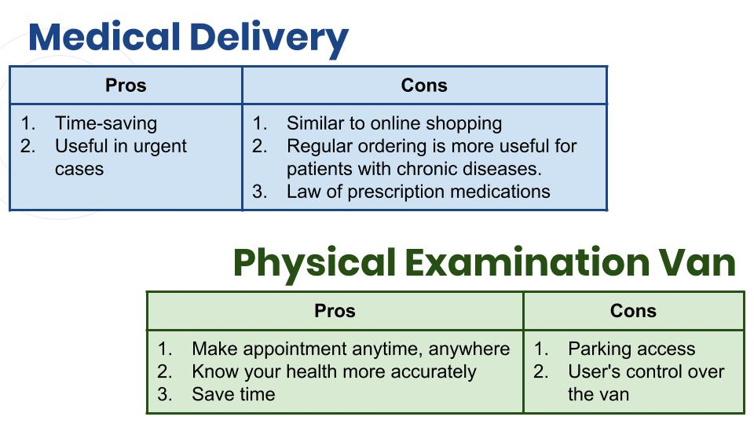

Portfolio
Introduction
This project is focusing on use autonomous vehicles to improve the current medical experience. According to our research, people were troubled with the highly time consuming of travelling to or waiting in a medical center and the interruption of their schedule. And Vannie is designed to solve those problems. It is an app enabling users to interact with the proposed autonomous vehicle ‘physical examination van’, which users can make an appointment anywhere, anytime they like.
Just Have A Try!
My Role
RESEARCHER
For earlier stage opportunity-seeking, we did researchers seperatly in order to develop mutiple initial concepts and divergent ideas. I was focusing on the delivery of blood sample. I searched the conservation condition of blood, referenced existing drone delivery test and anylized the current service and experience.
VISUAL DESIGNER
After we eliminated our initial concepts to two, I designed logos to led the main visual style. I used simple lines and green as dominant colour to communicate the idea of health, clean, neat, easy and trustable to users.
UI & UX DESIGNER PROTOTYPER
I also led the sketching and was in charge of the design of the wireframe and the final mock-up. I keep the dominant colour as blue-green, avoided overwhelming colours and complex images, used simple outline icons to unify the clean and neat visual style. I referenced the IOS UI interface guidance, their neat wireframe and appropriate margin were perfect examples to learn.
 Wireframe of Vannie
Wireframe of Vannie
VIDEO DIRECTOR & EDITOR
The walkthrough video and the final video documentation was directed and edited by me. I used video to elaborate our concept visually. To avoid long explanation, we used persona to reveal current problems, and I edited the video with light music to make it more like an advertisement and more attractive.
OVERVIEW
Storyboards
At first we draw three storyboards for medical delivery drone, physical examination van and emergency drone. Focusing on making the whole medical experience more accessible and time-saving, our target users are more people in daily life rather than the emergency team. And with considered the difficulty of further user testing and evaluation, we eliminate the concept of emergency drone.
Sketches
Medical Delivery
Physical Delivery Van
Selection of Concepts

With analyzed the pros and cons of those two concepts and evaluated with users feedback, we decided the physical examination van as our final concept.
Wireframes
Mock-Up
 Mock-Up User Flow
Mock-Up User Flow
KEY IMPROVEMENTS
1.Add a van icon to present the position of the camera.
Based on interviews we found a few users were confused with the experience out of the screen, therefore I made the guidance more visually.
2.More like a list rather than buttons
Some users thought the rounded rectangle presents clickable buttons, so I changed them into simple lines.
3.Estimate time
The feedback we got from users shown they did not care where the van is, they more care about when the van will arrive. To reach the users need, I added the estimate time.
Evaluation with 10 Usability Heuristics for User Interface Design
Through rounds of testing, we have incorporated our knowledge of 10 Usability Heuristics for User Interface Design.
1.Visibility of system status, for sign up and payment stage, we added in pop-up to notify users their action is completed/ successful. Meanwhile, we also have review page so users are clear with their choices.
2.User control and freedom. Most pages has a go back button, they can always change what they’ve entered before.
3.Consistency and standards. We worked on the color, placement of each button, having each title fixed to the header so every interface element was consistent through the whole process.
4.Error prevention. This is presented in the set up of appointment time and position. With address, we offer suggestions instead of users manually type in, therefore, less typo. We have also constrained the types of input users can make with the time and date.
5.Flexibility and efficiency of use. The whole process is linear and straight forward, therefore, no matter the user is experienced or not, they know what the next step is.
6.Help and documentation. We have ‘my order’ set up so users can always review their past order and result.
REFLECTION AND OUTCOMES
For Vannie
We have done a good job in styling the app with aesthetic and minimalist design.
Next step would be looking at error message helping users recognize, diagnose, and recover from errors, e.g. entering the wrong medicare no./ ref no.
Past examination results could be added making it easier for users to document their health condition.
We have discussed that profile was not as necessary at this stage, a profile could be added to store user information, for example, address, etc.
For myself, through this project, I learnt a lot.
Teamwork
At first we thought about equally allocated tasks all the way along, however, when it came to wireframes and video, it was hard to do equally one third for each group member. As we trust each other, they let me design the wireframe and make the video, and I can left report to my reliable teammates. Therefore we could all do what we were good at.Skills
Due to this opportunity, I practised my prototype skills, I can expertly use the design tools like Xd and Sketch, but there are still a lot of advanced tools I need to learn.The user testing was the most surprising part for me, as a main designer of the app, I found there were so many different cognitions of the app with me and users. There was always potential improvement space, the app was always not simple enough for users to understand. Every time I test the app with users with different backgrounds, the experience was totally different and I could have inspirations and new ideas.